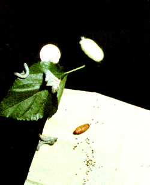

The tiny black spots you see here on Me tissue are eggs ... which will hatch into silkworms (shown munching on a mulberry leaf) in about three to ten days. After 30 days of grazin ~-during which the wrigglers each eat about a quarter pound of leaves and increase their initial weight by 10,000 times! these critters'll encase themselves in robes of silk, producing cocoons a little larger than a quarter. The fat, brown pupa (on the paper towel) that inhabits the cocoon will either be killed-by heating in the oven or (for a longer period of time) in the sun-and its covering harvested ... or the chrysalid will be allowed to hatch into the silkworm moth (again, perched on the leaf). Such adults will soon mate, reproduce, and die ... thereby completing their life cycle (the entirety of which-you'll notice-is shown in this photo!).